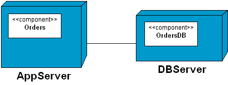

, and then drop onto the target node.
, and then drop onto the target node.The IDE nests the component inside the node.
You can nest Components inside Nodes by dropping or moving the component into a Node. Do one of the following:
To nest components inside nodes:
, and then drop onto the target node.